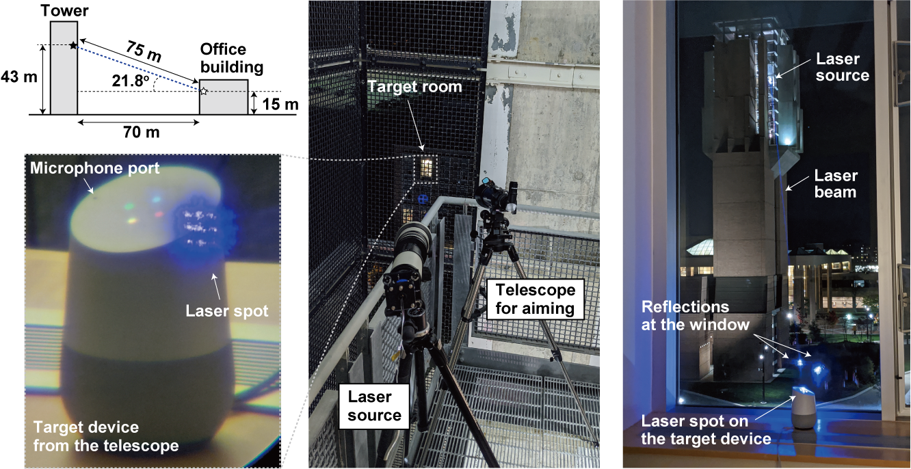
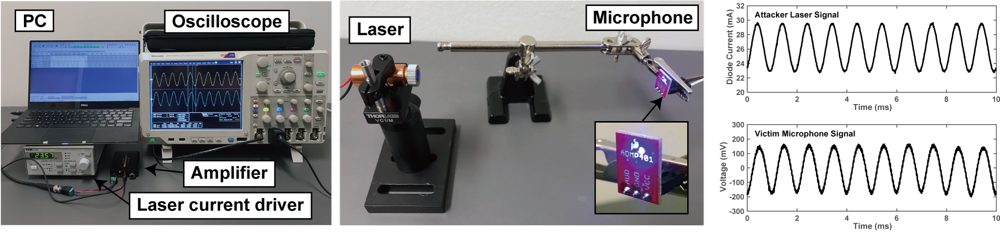
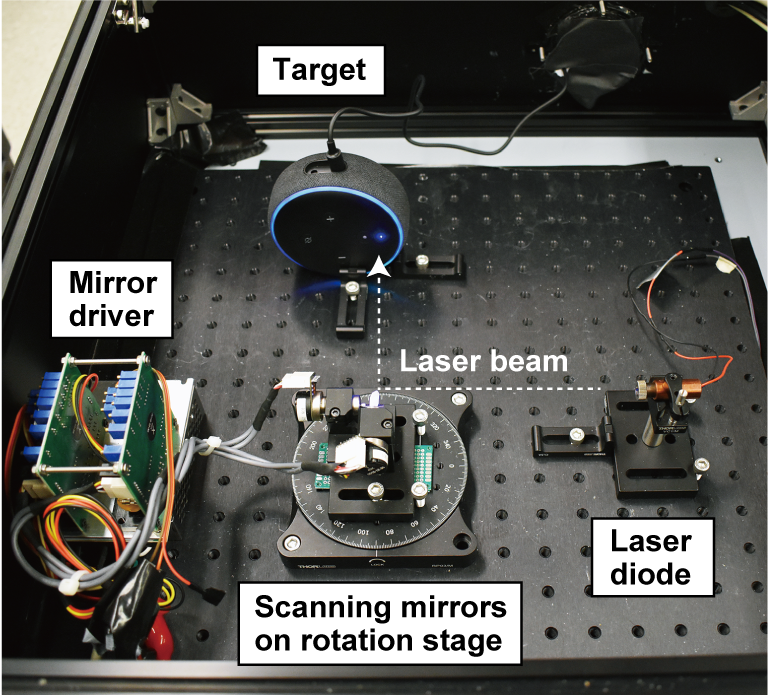
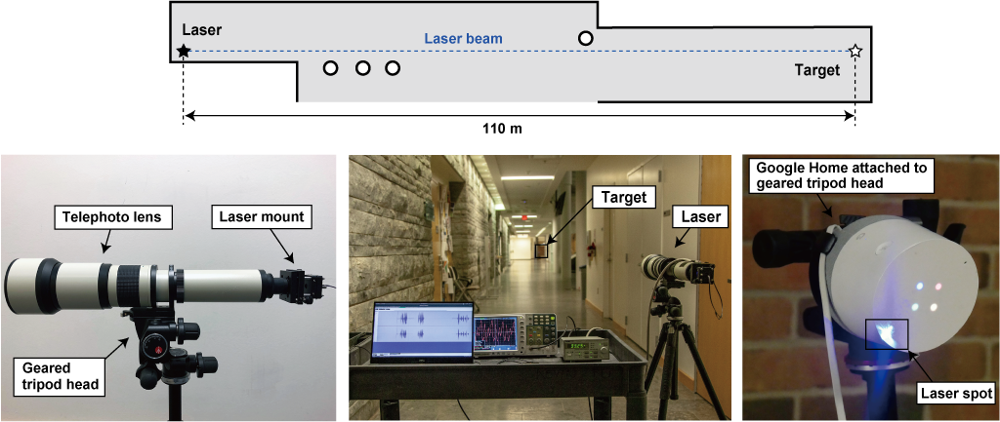
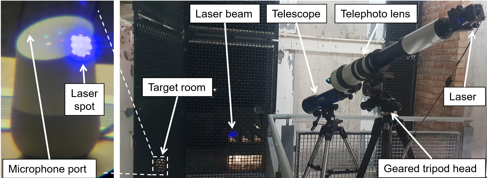
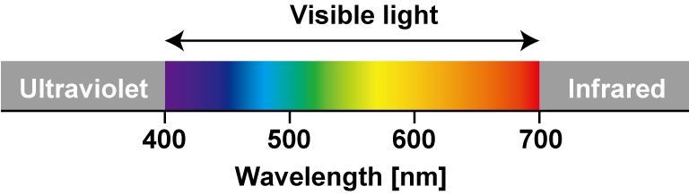
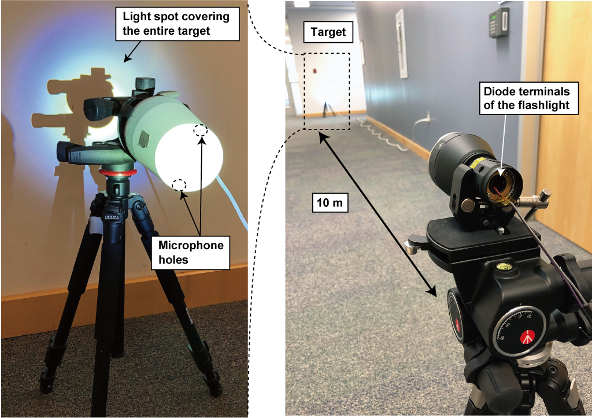

レーザーを用いて音声コマンドを挿入する攻撃
Light Commands は，MEMS マイクが光に感度を持つ脆弱性を利用して，Google アシスタント, Amazon Alexa, Facebook Portal および Apple Siri などの音声アシスタントに対し，遠隔から無音かつ不可視でコマンドを挿入する攻撃です．
私達の論文では，スマートスピーカー，タブレット，スマートフォンなどの様々な音声コントロール機器に対し，遠隔から，窓ガラスなどを貫通して悪意あるコマンドを挿入できることを実証しました．
不正なコマンドを挿入する攻撃の深刻さは，実行されるコマンドの種類によります．論文では，その一例として，光を用いて音声コマンドを挿入することで，スマートロックで保護されたドアを解錠したり，車の現在位置の特定・解錠・始動などが行えることを示しました．
USENIX Security Symposium 2020 に採録されました．
論文を読む 引用する
@inproceedings{sugawara2020light,
title={Light Commands: Laser-Based Audio Injection Attacks on Voice-Controllable Systems},
author={Takeshi, Sugawara and Benjamin, Cyr and Sara, Rampazzi and Daniel, Genkin and Kevin, Fu},
booktitle={29th {USENIX} Security Symposium ({USENIX} Security 20)},
year={2020}
}
Light Commands を動画で見る
チーム
Light Commands は，大学の研究者からなる次のチームが発見しました:
- 菅原健 at 電気通信大学
- Benjamin Cyr at ミシガン大学
- Sara Rampazzi at ミシガン大学
- Daniel Genkin at ミシガン大学
- Kevin Fu at ミシガン大学

Q&A
-
Light Commands とはどういうものですか？
スマートスピーカー・タブレット・スマートフォンの中にあるマイクに対して， 窓ガラスを通してレーザーを照射することで，音声アシスタント（Alexa, Portal, Google アシスタント，および Siri など）にコマンドを入力する攻撃です． 遥か遠くから無音で（またレーザーの種類によっては不可視で）行うことができます．
攻撃者が音声アシスタントの制御を奪うということは，派生するシステムに攻撃が連鎖することを意味します．例えば，次のような攻撃がありえます:
- スマートホームのスイッチを制御する
- スマートガレージドアを開ける
- オンラインで買い物をする
- 特定の車のドアを解錠したり，エンジンを始動する
- 密かに暗証番号を全探索することで，スマートロックを解錠する
-
なぜそんなことができるのですか？
マイクとはそもそも，音波を電気信号に変換するためにあります．Light Commands の重要な点は，マイクが，実は音だけでなく光にも反応してしまうことを発見したことにあります．そのため，光の強さを音声信号で変調してマイクに照射すると，あたかも音声を受信したかのような電気信号を発生させて，マイクを騙すことができるのです．
 -
なるほど．でもそれと音声アシスタントはどう関係があるのですか？
音声アシスタントは，その名の通り，音声を用いてユーザと対話をします．そのため，レーザー照射で音声コマンドを入力できるということは，攻撃者が音声アシスタントをハイジャックして，Alexa, Siri, Portal や Google アシスタントにコマンドを送り込むことができることを意味します．
 -
Light Commands はどのくらい遠くまで届きますか？
光そのものは容易に遠隔まで届くため，距離の限界はレーザーのフォーカスと照準が決めます．私達の実験では，用意した 110 メートルの廊下の両端でも成功することを確かめました．
 -
でもそんなに遠くからレーザーを正確に当てることなんてできるのですか？
攻撃が成功するには，正確な照準とフォーカスが必要です．遠くからフォーカスをするためには，市販の望遠レンズを使うことができます．また，三脚に積んだギア付き雲台を用いて照準の精度を大きく上げることができます．攻撃者は望遠鏡や双眼鏡を使うことで，攻撃対象のマイクを遠くから目視することができます．
 -
どの機器が Light Commands の影響を受けますか？
最も一般的な音声コントロールシステムである Amazon Alexa, Apple Siri, Portal, および Googleアシスタントで攻撃が成功することを確認しました．それらが動作する複数のスマートスピーカー，スマートフォン，タブレット，および音声認識を組み込んだサードパーティ製品でベンチマークを行いました．
Device Voice Recognition
SystemMinimun Laser Power
at 30 cm [mW]Max Distance
at 60 mW [m]*Max Distance
at 5 mW [m]**Google Home Google Assistant 0.5 50+ 110+ Google Home mini Google Assistant 16 20 - Google NEST Cam IQ Google Assistant 9 50+ - Echo Plus 1st Generation Amazon Alexa 2.4 50+ 110+ Echo Plus 2nd Generation Amazon Alexa 2.9 50+ 50 Echo Amazon Alexa 25 50+ - Echo Dot 2nd Generation Amazon Alexa 7 50+ - Echo Dot 3rd Generation Amazon Alexa 9 50+ - Echo Show 5 Amazon Alexa 17 50+ - Echo Spot Amazon Alexa 29 50+ - Facebook Portal Mini Alexa + Portal 18 5 - Fire Cube TV Amazon Alexa 13 20 - EchoBee 4 Amazon Alexa 1.7 50+ 70 iPhone XR Siri 21 10 - iPad 6th Gen Siri 27 20 - Samsung Galaxy S9 Google Assistant 60 5 - Google Pixel 2 Google Assistant 46 5 - この結果は，ありうる全ての機器を尽くしているわけではありませんが，一般的な機器の多くが Light Commands の影響を受けることを示しています．
Note:
* 50 メートルの廊下で実施．
** 110 メートルのより長い廊下で実施． -
話者識別 (Speaker Recognition) は Light Commands の対策になりますか？
執筆時点において，話者識別は，スマートスピーカーではデフォルトではオフです（デフォルトでオンなのはスマートフォンやタブレットのみです）．その場合，所有者の声を模倣したりすることなく攻撃が成立します．また，たとえ話者識別がオンであったとしても，話者の確認はウェイクアップワード（「OK Google」や「Alexa」）のみで，コマンド残り部分の確認はされません．すなわち，所有者が発したウェイクアップワードを１度だけ録音すれば，どのようなコマンドも実行できてしまいます．最後に，私達が論文の中で示したように，ウェイクアップワードの識別は，オンラインの音声合成ツールを用いて所有者の声を真似することで迂回できることがあります．
-
Light Commands には特殊な機器が必要ですか？セットアップを作るにはどうしたら良いですか？
Light Commands は，次のような簡単な機材で行うことができます: 普通のレーザーポインタ ($13.99, $16.99, and $17.99 on Amazon), レーザードライバ (Wavelength Electronics LD5CHA, $339), オーディオアンプ (Neoteck NTK059, $27.99 on Amazon). また，長距離でのフォーカスには望遠レンズ (Opteka 650-1300mm, $199.95 on Amazon) を用いることができます．

-
他の音声コントロールシステムはどれくらい脆弱ですか？
私たちの論文では Alexa, Siri, Portal および Google アシスタントを対象としましたが，根本的な原因はマイクそのものにあります．そのため，MEMS マイクを用いるシステムで，追加の確認なくコマンドを受けとる機器は脆弱になる可能性があります．
-
Light Commands の攻撃を受けていることに気づくにはどうしたら良いですか？
Light Commands は無音ですが，よく気がつく人であれば，機器に照射された光に気づくことができます．それとは別に，機器がコマンドを受け取ったときに生じる音声による受け答えや，光のパターンを観察することでも攻撃に気づける可能性があります．
-
Light Commands が実世界で悪用されたことはありますか？
これまでに，実世界で悪用されたことを示す兆候は確認していません．
-
レーザーの色や波長は関係ありますか？
実験において，レーザーの色や波長とはおおむね独立であるという実験結果を得ています．光のスペクトルの両端である赤色と青色の両方で試しましたが，照射によって生じる電気信号のレベルや周波数特性は同程度でした．
 -
レーザーである必要はありますか？他の投光器でも同じことができますか？
十分に強い光であれば，原理的に，同じ攻撃ができます． たとえば，Acebeam W30 とよばれる（レーザー励起型の）懐中電灯を代わりに用いることができます．
 -
この攻撃を緩和することはできますか？
追加の認証を一層追加することは，有効な対策になりえます．また，もし攻撃者が機器からのレスポンスを盗聴できない場合であれば，機器が発したランダムな質問に答えなくてはコマンドを受理できないようにすることも，効果的な対策になる可能性があります．
機器の製造者の立場では，センサフュージョンを対策に使える可能性があります．たとえば，複数のマイクを用いて音声を取得するような場合です．もし攻撃者がレーザーを1本しか持っていなければ，ある特定のマイクのみが音声を受信し，それ以外は何も受信しないという状況が生じます．機器の製造者は，そのような異常な状態を監視してコマンドを無視する，といった対策をとれる可能性があります．
さらに別のアプローチは，マイクの振動板に到達する光を減らすことです．たとえば，直線上に到来する光をブロックする物理的な障壁を用意することで視線を遮ったり，光を通さない素材でマイクの穴を覆って光を弱めることなどが考えられます．ただし，このような物理的な障壁には限界があることに注意が必要です．なぜなら，攻撃者はレーザーの出力を上げることで減衰した分を補ったり，そもそもレーザーを用いて障壁を焼いてしまうことができるためです．
-
攻撃に使ったレーザーは安全なものですか？
高出力のレーザーは火災を引き起こしたり，目や皮膚への怪我を生じることがあるため，レーザーの照射には適切な管理が必要です．この研究では，低出力な クラス 3R と， クラス 3B のレーザーを用いました．クラス 3R （光のパワーにして 5 mW 以下）は，米国におけるレーザーポインターの出力であり，ごく短時間であれば裸眼に入っても安全であると考えられています．
クラス 3B は，5〜500 mW に対応しており，ごく短時間の照射であっても目に障害を生じる可能性があります．この研究を再現しようとする前には，正式なレーザー安全教育を受講するとともに，実験計画の承認を受けるべきです．
-
Light Commands という名前の由来は何ですか？
音ではなく，光を用いてコマンドを運ぶためです．
-
ロゴを使っても良いですか？
ロゴは，CC0 ライセンスに従って自由に利用することができます．ロゴは，Emilio Pimentel がデザインしたものです.
Logo Logo with side text Logo with bottom text PNG / SVG PNG / SVG PNG / SVG
{kind=link}
{kind=link}
{kind=link}
{kind=link}
{kind=link}
{kind=link}
Acknowledgments
We thank John Nees for advice on laser operation and laser optics. This research was funded by JSPS KAKENHI Grant #JP18K18047 and #JP18KK0312, by DARPA and AFRL under contracts FA8750-19-C-0531 and HR001120C0087, by NSF under grants CNS-1954712 and CNS-2031077, gifts from Intel, AMD, and Analog Devices, and an award from MCity at the University of Michigan.